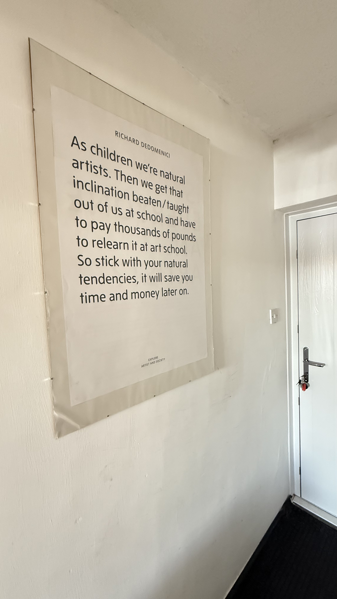

Community arts is an important movement because historically, access to arts has generally been reserved for people with a certain wealth threshold. Previously, I was an after-school club leader teaching primary-aged children computer arts skills. The classes were mainly held in predominantly wealthy areas of the city, and one school in particular was a private school. Even though the cost of access per child was kept as low as possible, the general socio-economic makeup of the groups could be strongly felt. One of the classes was taught within the gaming platform Minecraft. The teaching style of the class was framed using socialist foundations. I would attempt to form groups of workers with the classmates: some farmers, producing crops and breeding livestock; others would be miners, searching for materials and precious stones; some builders, helping to build housing for the community; and some would be adventurers, seeking out new places and bringing back rare items, maps and other things they could find. It was allowed through the weeks that the children could shift between groups as it is only fair that if one week they were a farmer or a miner, they should be allowed to change their position of 'employment' through their participation in the game, and who wants to be in the same working position all their lives? Wouldn't it be more beneficial to society if more people were skilled in more areas than one? The phrases Jack of all trades, master of none, though oftimes better than master of one and variety is the spice of life come to mind. Although no study was conducted, I realised the female participants were content to work this way. Working together to build a community. However, a large percentage of the male participants were more interested in destruction, having no regard for the work of the community. I had to exile them to an external area for extended periods. One boy was made to spend time outside the class for continually disruptive behaviour and complained that he would inform his parents because he could not do as he pleased.
In the example above. I was the state. I gave rules and structures for the group to coexist inside of, but be aware here that I am making huge assumptions and sweeping generalisations, that the children I was teaching mainly came from families of the middle class upwards. In the neoliberal mind, I was the enemy. How dare I enforce such things as community and sharing of wealth (rare minerals such as iron, gold and diamonds were to be shared fairly with the group, and the finder of these minerals could keep a percentage of what they found for themselves to be used as they wish). As Hall states regarding the neoliberal model, "State-led 'social engineering' must never prevail over corporate and private interests".1 How would children know about these things if not being surrounded by this ideology? How would a fish know it lives in water unless dragged out to the river bank?
Already, at such an early age, we can observe neoliberalism at work. However, as mentioned above, primarily among the male population of the (incredibly small subset) group. This way of thinking is nurtured throughout the lives of well-to-do families and has been strongly encouraged by the Conservative government since the election of Margaret Thatcher, continuing through successive Labour governments and persisting to this day.
There is no such thing as society. There is living tapestry of men and women and people and the beauty of that tapestry and the quality of our lives will depend upon how much each of us is prepared to take responsibility for ourselves and each of us prepared to turn round and help by our own efforts those who are unfortunate.2
The after-school clubs were not a free after-school initiative with grant backing, so they were already going to be one-sided. In Claire Bishop's book, Artificial Hells, she takes an entire chapter (Chapter 6) to write about two groups. The Artists Placement Group (APG) and the community arts movement. Bishop writes, "These developments represent two distinct poles of rethinking the artist's place in society in the late 1960s and 1970s: one in which the artist undertakes a placement with a company or government body, and one in which the individual artist assumes the role of facilitating creativity among 'everyday' people."3
These advances were only actually beginning to emerge in recent history. During the time, the British political landscape swung back and forth every few years following a thirteen year stint with the conservatives after WWII, concluding with a five-year Labour stint before Margret Thatcher rose to power in '79. The sequential governments could be why both movements came out at this time. Each mirrors the side of the fence from where they grew up. Artist John Latham and partner Barbera Stevini founded the APG. The group was set up to send (mainly) established artists into large companies in the private sector (British European Airways, Scottish Television and British Steel Corporation were some places where the artists went to work). One artist in the APG, Stuart Brisley, felt that APG was "too enamoured with management (rather than workers)."4 This is undoubtedly a part of class consciousness and the position of how and in what kind of ideology a person is raised. I could speculate more on these ideas regarding the APG, but they are out of the scope of this short dissertation and, quite possibly, more a reflection of my upbringing and the chip on my shoulder regarding privilage in the arts. However, this is an important factor to be considered in the scope of this work as a whole.
The opposite pole to the APG is "the community arts movement, whose emergence in the UK forms part of an international push across Europe and North America to democratise and facilitate lay creativity, and to increase accessibility to the arts for less privileged audiences".5
"The community arts movement operated in less glamourous contexts. At a grass-roots level of community activism".6 Working at this level is always much less glamorous. However, the grass-roots is important. Local artists can be neglected in favour of big names or projects. Without help at the grass-roots level, the loss of important voices can be detrimental to the local and, in time to come, the national and even international scenes. To the working-class artist, it would be easier to give up. The scales certainly are not tipped in our favour. We face difficulties accessing the arts, accessing the tools required to be in the arts, and working in the arts. Being surrounded by people of our socio-economic status certainly has its troubles with fighting out of the trapped thinking that all we can be is labour. It has been shown that people with a further education take up arts. If a child grows up seeing their parents practising/playing something arts-based (painting, sculpting, playing a musical instrument), even as a hobby, then it is more likely that the child will also take up some arts-based hobby. Also the same is true of education. Children of parents with a university degree are likelier to attend university. "Those with a degree were around four times more likely to take part in painting and photography than those with no educational qualification, five times more likely to be involved in dance and in crafts, and four times more likely to play a musical instrument."7 I have never had this experience. Neither parents nor elder sibling ever made it beyond a high school education. No one in my family played a musical instrument. My brother was interested in art, but he gave up due to a family tragedy whilst younger. I also believe every child has some artistic leaning; it is just that that is beaten out of you at school in order for you to become factory fodder. A few years ago I was gifted with this poster from John Tuffen as he was reminded of something I said to him along these lines. I keep it hanging in the hallway entrance to the house.
Richard Dedomenici quote for Tate Explore Artists And Society Poster. Poster is my own.